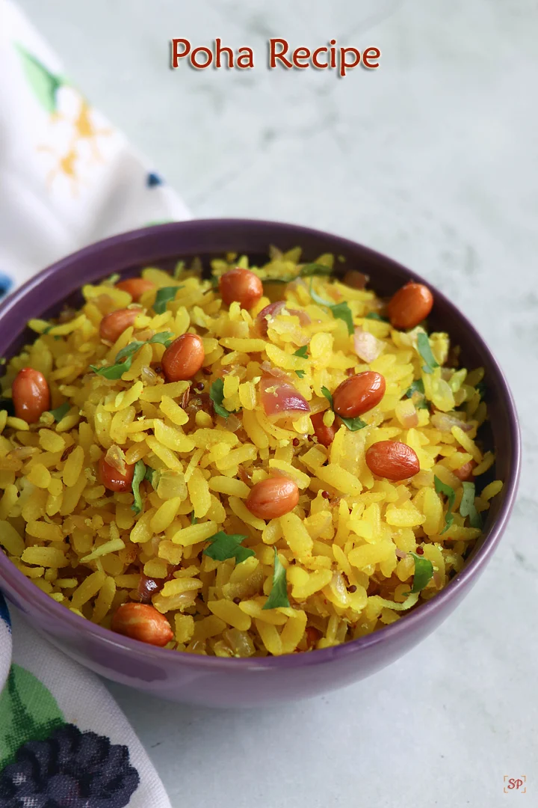
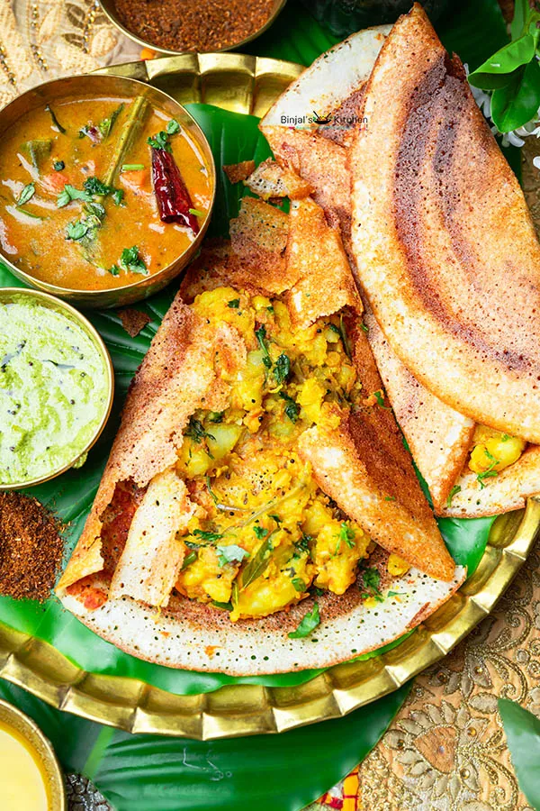

🍴 "Welcome to the Recipe Book — a curated collection of flavors, crafted with simplicity and love."
Poha
Poha
Ingredients list
- Poha (flattened rice) – 2 cups
- Onion – 1 medium (finely chopped)
- Green chilies – 1-2 (slit or chopped)
- Potato – 1 medium (small cubes, optional but tasty)
- Peanuts – 2 tbsp
- Curry leaves – 8-10
- Mustard seeds – ½ tsp
- Turmeric powder – ½ tsp
- Salt – to taste
- Sugar – ½ tsp (optional, for balance)
- Lemon juice – 1 tbsp
- Fresh coriander leaves – 2 tbsp (chopped, for garnish)
- Oil – 2 tbsp
Steps to prepare the dish:
- Rinse poha in a strainer, drain water, and keep aside.
- Heat oil, fry peanuts till crisp, remove and keep aside.
- In the same oil, add mustard seeds, curry leaves, green chili, onion, potato and sauté till potatoes cook.
- Add turmeric, salt, sugar, then mix in soaked poha
- Cook 2–3 mins, add peanuts, lemon juice, and garnish with coriander.

Masala Dosa
Masala Dosa
Ingredients list
- 2 cups rice
- ½ cup urad dal (split black gram)
- 2 tbsp chana dal
- ¼ tsp fenugreek seeds
- Salt, water (for soaking & grinding)
- 3–4 boiled potatoes
- 1 large onion (sliced)
- 2 green chilies (slit/chopped)
- 1-inch ginger (grated)
- Few curry leaves
- ½ tsp mustard seeds
- ½ tsp turmeric powder
- 1 tbsp oil
- Salt to taste
- Fresh coriander leaves (chopped)
Steps to prepare the dish:
- Soak rice & dal → grind → ferment batter overnight.
- Boil & mash potatoes → sauté with onion, green chili, curry leaves, turmeric, salt.
- Heat tawa → pour batter → spread thin like a crepe.
- Add potato filling → fold dosa.
- Serve hot with chutney & sambar.

Paneer Butter Masala
Paneer Butter Masala
Ingredients list
- 200–250 g paneer (cottage cheese), cut into cubes
- 2 medium onions, roughly chopped
- 3 medium tomatoes, roughly chopped
- 2 green chilies (optional, for spice)
- 1 tbsp ginger-garlic paste
- 2–3 tbsp butter
- 2 tbsp fresh cream
- 2–3 tbsp oil
- 8–10 cashew nuts (soaked in warm water)
- 1 bay leaf
- 2–3 green cardamoms
- 1 small cinnamon stick
- 2–3 cloves
- 1 tsp red chili powder
- 1 tsp turmeric powder
- 1 tsp coriander powder
- 1 tsp garam masala
- 1 tsp kasuri methi (dried fenugreek leaves)
- Salt to taste
- Fresh coriander leaves for garnish
Steps to prepare the dish:
- Prepare the Base
- Heat 2 tbsp butter + 1 tbsp oil in a pan.
- Add 2 chopped onions and sauté until golden brown.
- Add 3-4 chopped tomatoes, 8-10 cashews, 1 tsp ginger-garlic paste.
- Cook until soft, then cool and blend into a smooth paste.
- Cook the Masala
- Heat 1 tbsp butter in a pan.
- Add 1 bay leaf, 1-inch cinnamon, 2-3 cardamoms (optional).
- Add the prepared onion-tomato-cashew paste.
- Spice It Up
- Add 1 tsp red chili powder, ½ tsp turmeric, 1 tsp garam masala, 1 tsp coriander powder, and salt.
- Cook until the oil starts to separate from the masala.
- Creamy Gravy
- Add ½ to 1 cup water (depending on how thick you want the gravy).
- Simmer for 5 minutes.
- Add Paneer
- Add paneer cubes (200g) gently into the gravy.
- Simmer for 3-4 minutes (do not overcook or paneer becomes chewy)
- Finish with Richness
- Add 2 tbsp fresh cream + 1 tsp kasuri methi (crushed).
- Stir gently and cook for 2 minutes.
- Serve Hot
- Garnish with fresh coriander and a drizzle of cream.
- Serve with naan, roti, or jeera rice.